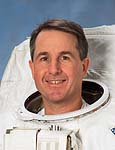

Lyndon B. Johnson Space Center
Houston, Texas 77058
|
National Aeronautics and Space Administration Lyndon B. Johnson Space Center Houston, Texas 77058 |
 |
Biographical Data |
||
Stephen K. Robinson (Ph.D.)
NASA Astronaut (FORMER)
PERSONAL DATA: Born October 26, 1955, in Sacramento, California. Enjoys flying, antique aircraft, kayaking, hiking, drawing, painting and stereo photography. Plays lead guitar in Max Q, the all-astronaut rock-n-roll band; also plays stand-up bass, banjo, mandolin, pedal-steel guitar and cello.
EDUCATION:
ORGANIZATIONS: Experimental Aircraft Association.
SPECIAL HONORS: NASA Ames Honor Award for Scientist (1989); American Institute of Aeronautics and Astronautics Outstanding Technical Paper Award for Applied Aerodynamics (co-author) (1992); NASA/Space Club Low Memorial Engineering Fellowship (1993); NASA Spaceflight Medal (1997, 1998, 2005, 2010); NASA Outstanding Leadership Medal (2000); UC Davis Medal (2005); NASA Thorne Safety Award (2007); NASA Distinguished Service Medal (2011).
EXPERIENCE: Dr. Robinson started working for NASA in 1975 as a student co-op at NASA's Ames Research Center in California. After working as a graphic artist, surveyor, musician and radio disc jockey, he joined NASA Ames in 1979 as a research scientist in the fields of fluid dynamics, aerodynamics, experimental instrumentation and computational scientific visualization. While at NASA Ames, Robinson earned Master's and Doctorate degrees from Stanford University, with research emphasis in turbulence physics and additional research in human-eye dynamics. Robinson also founded and operated a computer graphics software firm in Silicon Valley from 1982 to 1986. In 1990, Robinson was selected as Chief of the Experimental Flow Physics Branch at NASA's Langley Research Center in Virginia, where he led a group of 35 engineers and scientists engaged in aerodynamics and fluid physics research. In 1993, Robinson was awarded the NASA/Space Club Low Memorial Engineering Fellowship and was assigned for 15 months to the Massachusetts Institute of Technology (MIT) as Visiting Engineer in the Man Vehicle Laboratory (MVL). As an MVL team member, he conducted neurovestibular research on astronauts on the Spacelab Life Sciences 2 shuttle mission (STS-58). Additional MIT research included spacewalk dynamics for satellite capture and space construction. While at MIT, Robinson was also a visiting scientist at the U.S. Department of Transportation's Volpe National Transportation Systems Center, doing research on environmental modeling for flight simulation, cockpit human factors for Global Positioning System (GPS)-guided instrument approach procedures and moving-map displays. Robinson returned to NASA Langley in September 1994, where he accepted a dual assignment as research scientist in the Multidisciplinary Design Optimization Branch and as leader of the Aerodynamics and Acoustics element of NASA's General Aviation Technology program. Robinson has been flying since age 14 and has logged more than 3,500 hours in flight vehicles ranging from antique tail-draggers to NASA space shuttles.
ASTRONAUT EXPERIENCE: Dr. Robinson was selected as an astronaut in December 1994 and reported to the Johnson Space Center in Houston, Texas, in March 1995. He held a wide variety of technical assignments within the Astronaut Office, including testing space shuttle flight control software, developing onboard computer and flight crew equipment, helping to develop the International Space Station robot arm and leading an astronaut team to specify window requirements for the Orion spacecraft. He has also served as Spacecraft Capsule Communicator (CAPCOM) in the Mission Control Center for 17 shuttle missions, including lead CAPCOM for the final shuttle mission, STS-135. The CAPCOM functions as the voice link between space shuttle crews and Mission Control. More recently, Robinson served for two years as Chief of Safety for the Astronaut Office. Beginning in January 2012, Robinson served as Director of the NASA Johnson Space Center Virtual Reality Laboratory as well as Chief of Aviation Safety for the Astronaut Office.
Stephen Robinson retired from NASA on June 30, 2012, after 17 years as an Astronaut and 36 years of NASA service. He is now Professor of Mechanical and Aerospace Engineering at the University of California, Davis.
Dr. Stephen Robinson has flown on four space shuttle missions and has served as a backup crew member for the fourth crew of the International Space Station:
Shuttle Mission STS-85 Discovery (August 7 to August 19, 1997) was a 12-day mission, during which the crew deployed and retrieved the Cryogenic Infrared Spectrometers & Telescopes for the Atmosphere - Shuttle Palette Satellite (CRISTA-SPAS) satellite, operated the Japanese Manipulator Flight Demonstration (MFD) robot arm, studied changes in the Earth's atmosphere and tested technology destined for use on the International Space Station. Robinson's responsibilities on STS-85 included flying both the shuttle robot arm and the experimental Japanese robot arm and serving as a contingency spacewalker. The mission was accomplished in 189 Earth orbits, traveling 4.7 million miles in 284 hours and 27 minutes.
Shuttle Mission STS-95 Discovery (October 29 to November 7, 1998) was a nine-day science mission, during which the crew supported more than 80 payloads, including deployment of the Spartan solar-observing spacecraft, the Hubble Space Telescope Orbital Systems Test Platform and investigations on spaceflight and the aging process with crew member John Glenn. As Payload Commander, Robinson was responsible for the accomplishment of all scientific objectives by the crew. As Prime Operator of the shuttle's robot arm, Robinson deployed and retrieved the Spartan satellite. The mission was accomplished in 134 Earth orbits, traveling 3.6 million miles in 213 hours and 44 minutes.
International Space Station Expedition 4 Backup (July 1999 to December 2001) Robinson served as backup crew member for the station Expedition 4 crew, which included cosmonaut training and certification in Star City, Russia.
Shuttle Mission STS-114 Discovery (July 26 to August 9, 2005) was the "Return to Flight" mission; the first shuttle flight in the two and-a-half years after the loss of space shuttle Columbia. The objective of the mission was to resupply the International Space Station and evaluate new procedures for flight safety and shuttle inspection and repair techniques. Robinson served as Flight Engineer and also performed three spacewalks, totaling 20 hours and 5 minutes, including an unplanned and unprecedented repair of space shuttle Discovery's heat shield. After a two-week, 5.8 million mile journey in space, Discovery and her crew returned to land at Edwards Air Force Base, California. Mission duration was 333 hours, 32 minutes and 48 seconds in 219 Earth orbits.
Shuttle Mission STS-130 Endeavour (February 8 to February 21, 2010) launched at night, carrying the International Space Station's final permanent modules: Tranquility (Node 3) and the seven-windowed Cupola viewing station. Tranquility is now the life support hub of the ISS, containing exercise, water recycling and environmental control systems. Robinson served as Flight Engineer, as Spacewalk Operations Officer to direct the three spacewalks from inside Endeavour and as chief mechanic for outfitting the new Node 3. During the two-week mission, Endeavour and her crew traveled more than 5.7 million miles and completed 217 orbits of the Earth, touching down at night at Kennedy Space Center in Florida.
In total, flying on STS-85 in 1997, STS-95 in 1998, STS-114 in 2005 and STS-130 in 2010, Robinson has logged more than 1,156 hours (48 days) and 19.8 million miles in space, including more than 20 hours of spacewalking.
JULY 2012
This is the only version available from NASA. Updates must be sought directly from Stephen Robinson.